DHCP
1. Instalacja DHCP
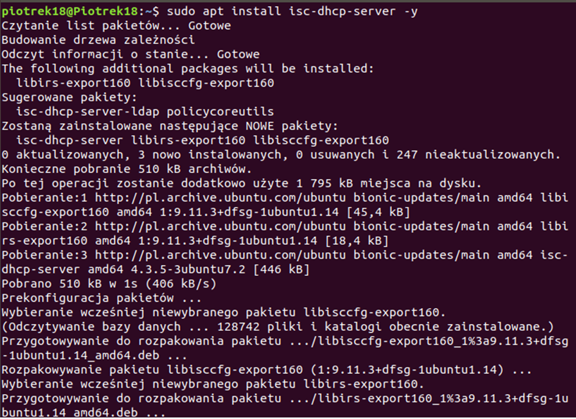2. Edycja pliku konfiguracyjnego, w którym określa się na którym interfejsie sieciowym będzie świadczona usługa DHCP.
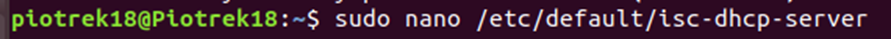3. W moim przypadku enp0s8, dla którego wcześniej przypisałem adres statyczny 192.168.17.6.
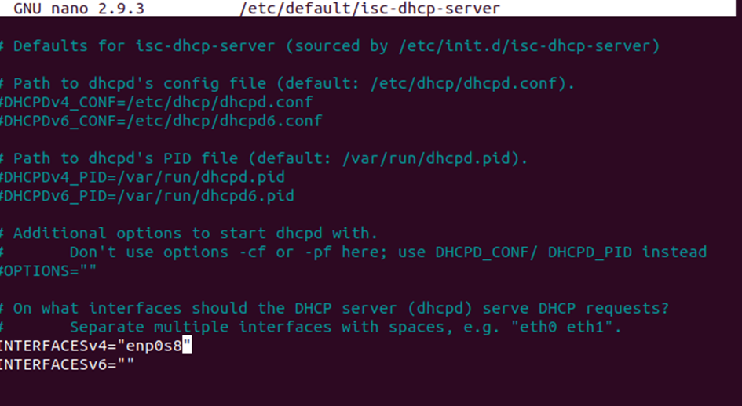4. Edycja drugiego pliku konfiguracyjnego
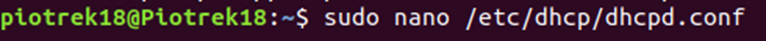5. Konfiguracja
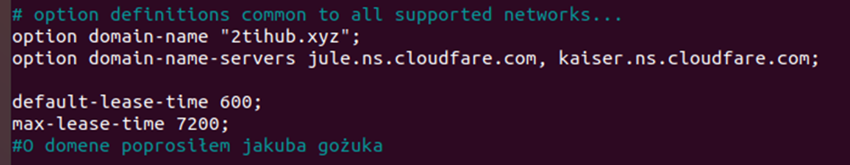 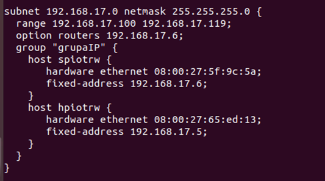6. Polecenia DHCP
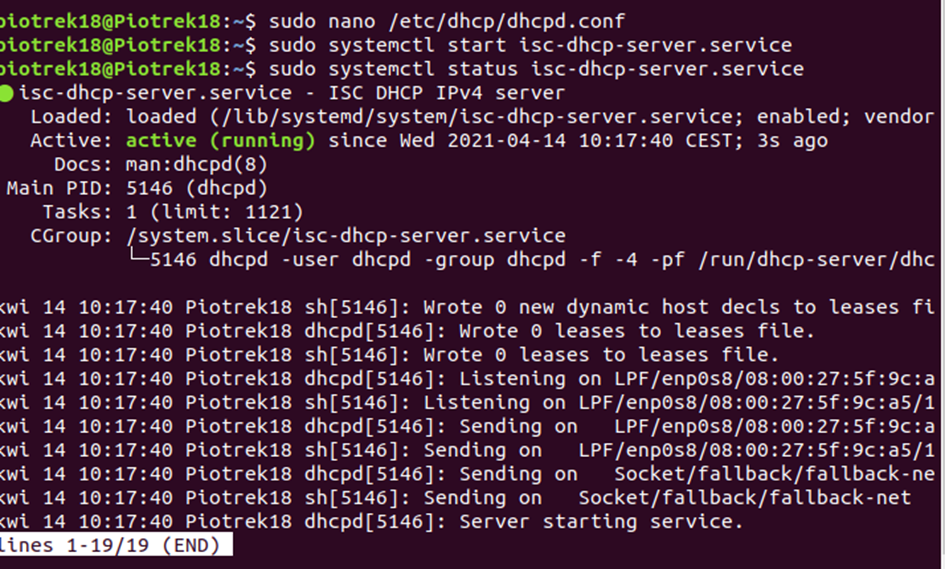 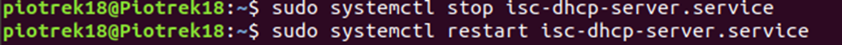7. Konifguracja stacji roboczej:
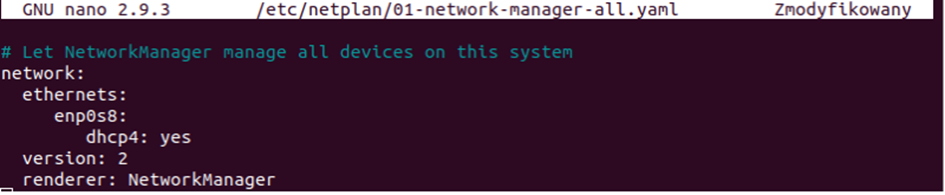8. Sprawdzenie jakie numery ip zostały przydzielone i na ile:
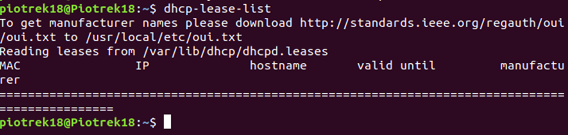Mi nie pokazuje bo mam je w grupie grupaIP pod subnetem w pliku /etc/dhcp/dhcpd.conf, ale działa
DNS
1. Instalacja DNS
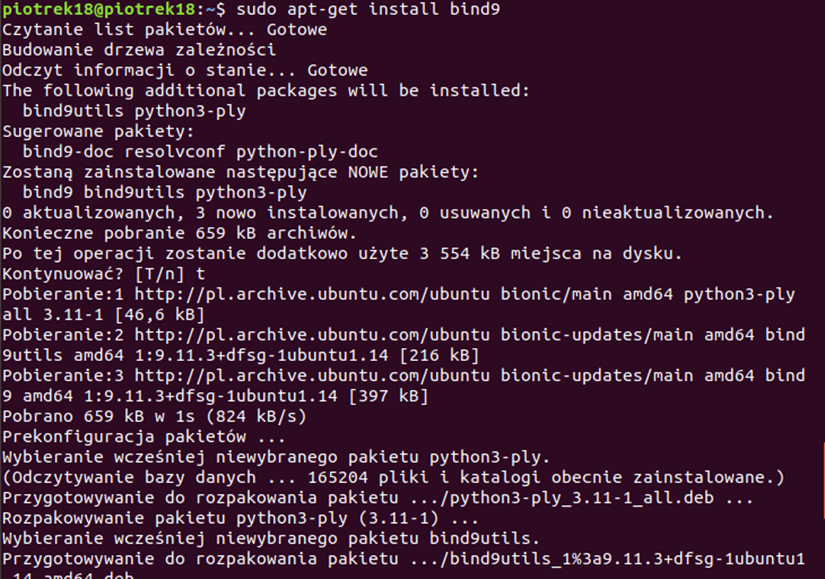2. Konfiguracja DNS oraz restart
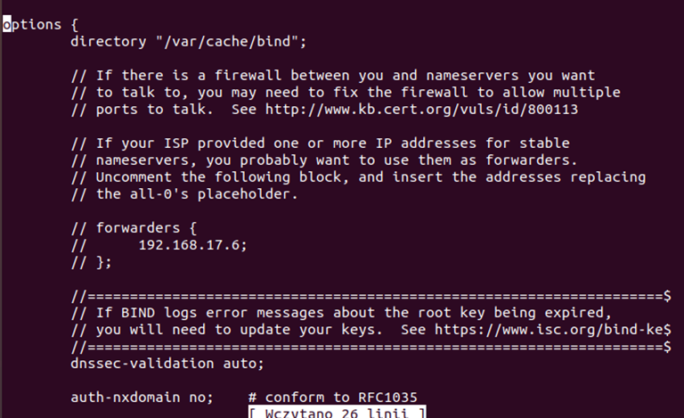 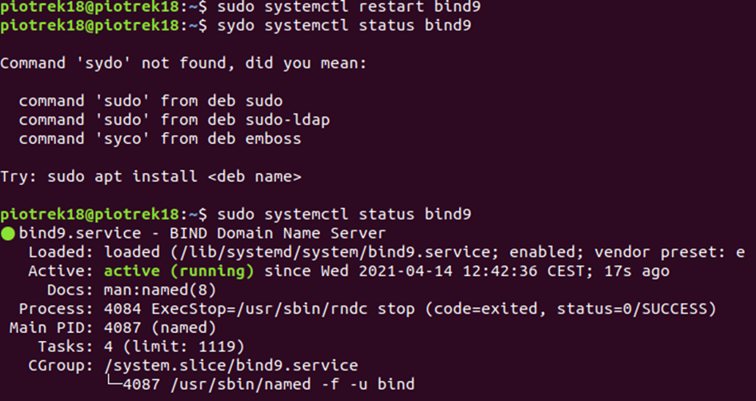3. Konfigurujemy /etc/hosts
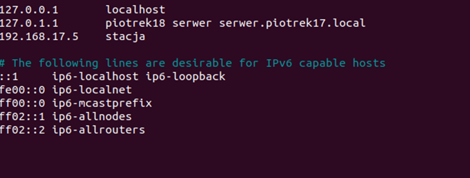4. Usuwam /etc/resolv.conf i stworze go na nowo
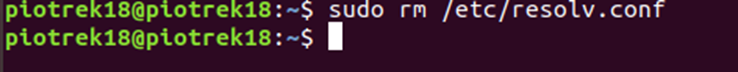 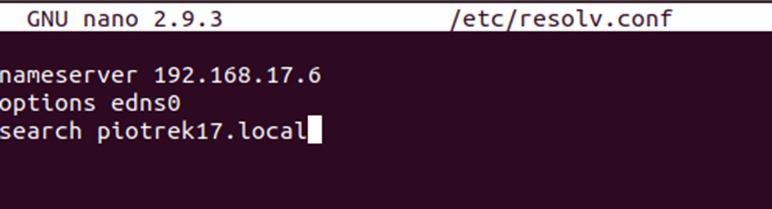 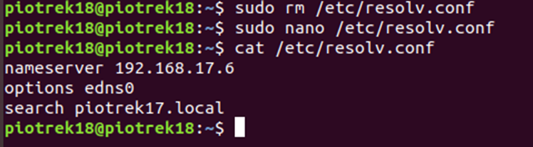5. Konfiguracja /etc/bind/named.conf.local
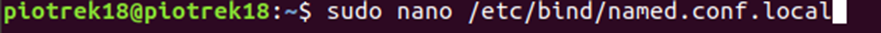 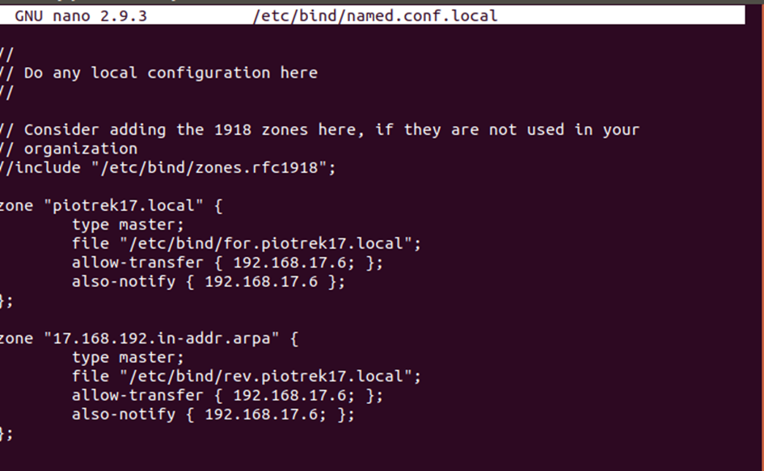6. Kopiuje plik /etc/bind/db.local oraz go skonfiguruje
 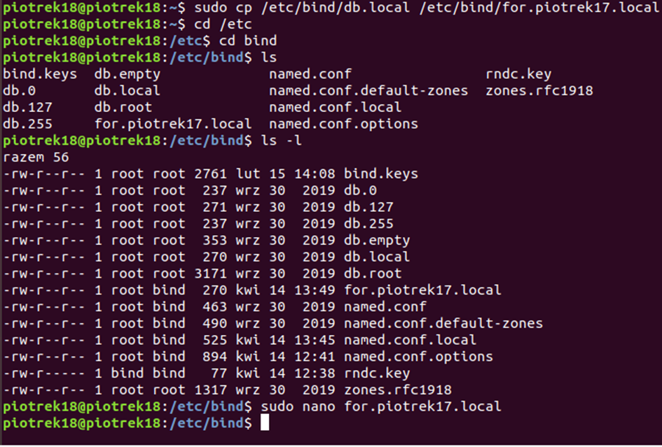
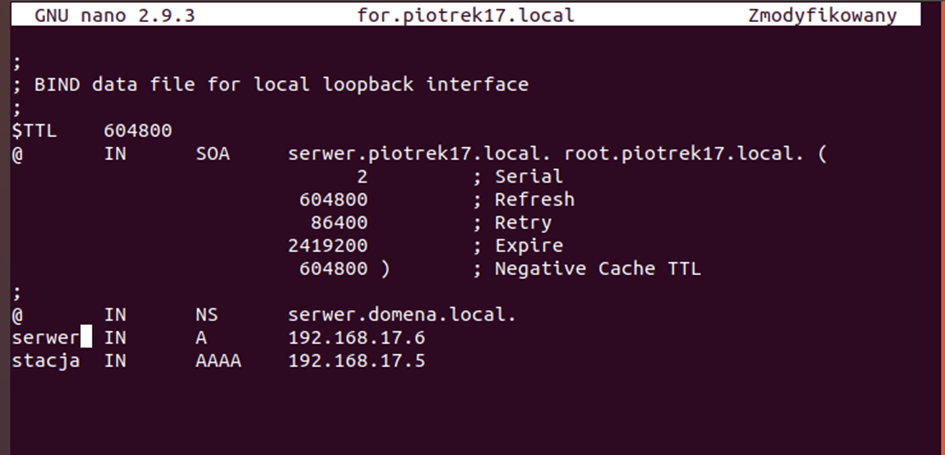
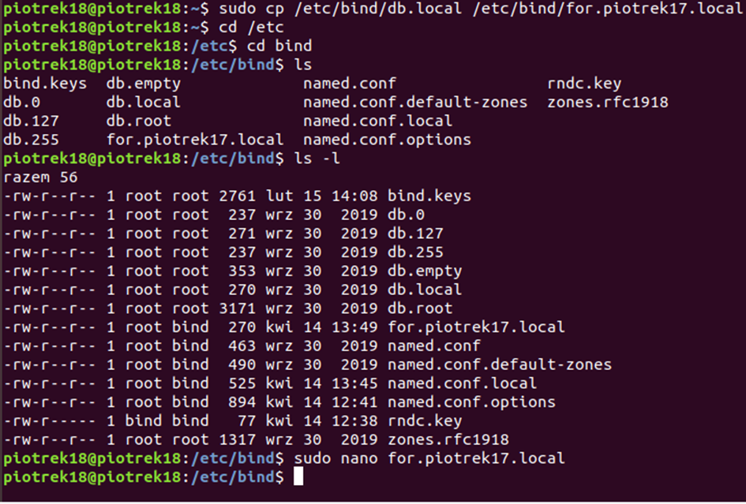
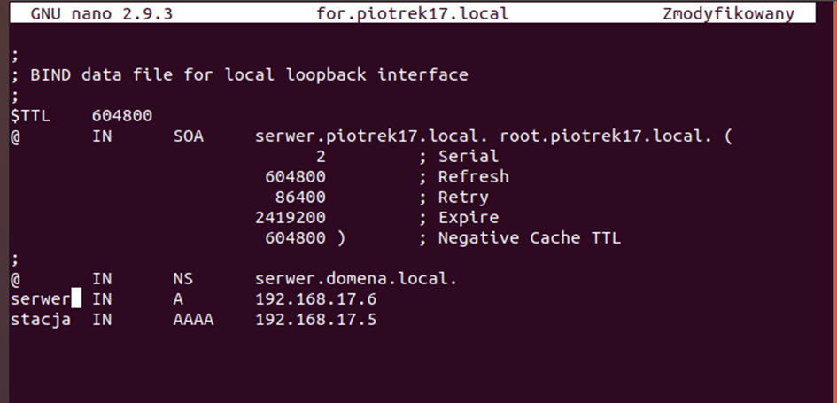
7. Teraz wejdę do pliku poleceniem sudo nano lecz zapisze go pod inną nazwą
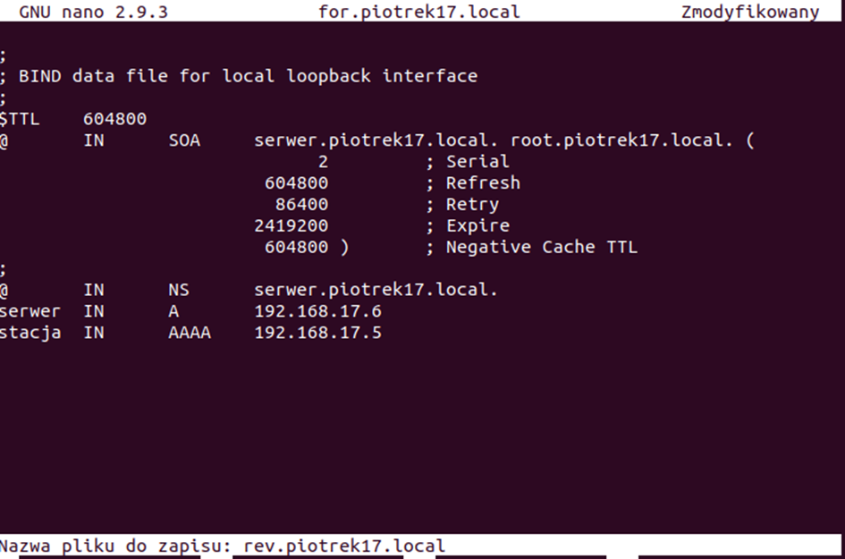Oba pliki powinny znajdować się w katalogu:
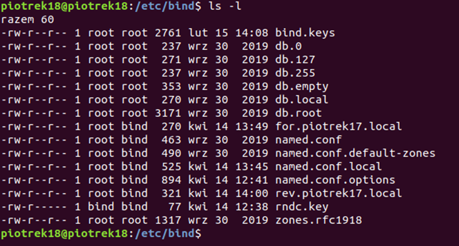Wówczas do pliku z przedrostkiem rev. dodaję rekordy DNS
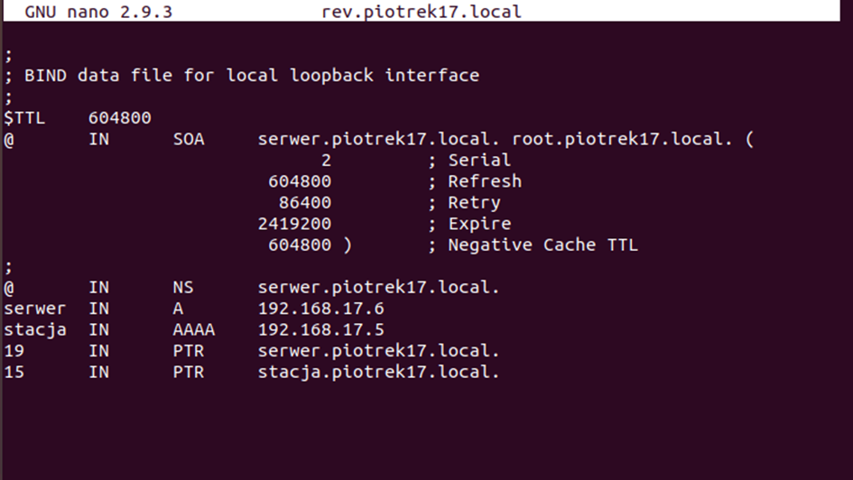Od tego momentu można używać wyrażenia stacja zamiast 192.168.17.5
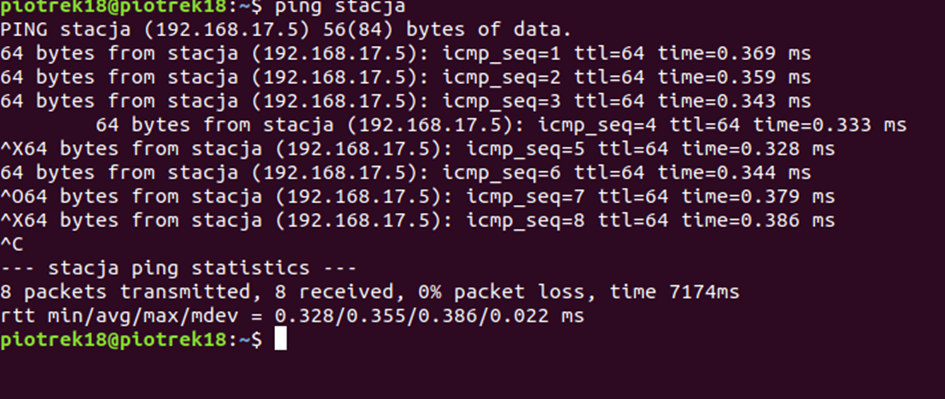Po wprowadzeniu do pliku konfiguracyjnego adresów serwerów nazw domenowych Cloudflare (jule.ns.cloudflare.com i kaiser.ns.cloudflare.com) strony lub pliki z serwera, do którego klient podłączony do lokalnej sieci wysyła zapytanie za drugim razem powinny ładować się szybciej. Poleceniem dig wyślę zapytanie do domeny 2tihub.xyz, za drugim razem czas zapytania (Query time) powinien być mniejszy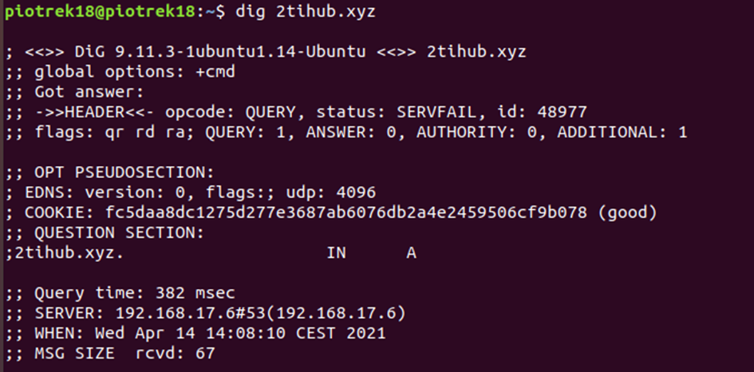 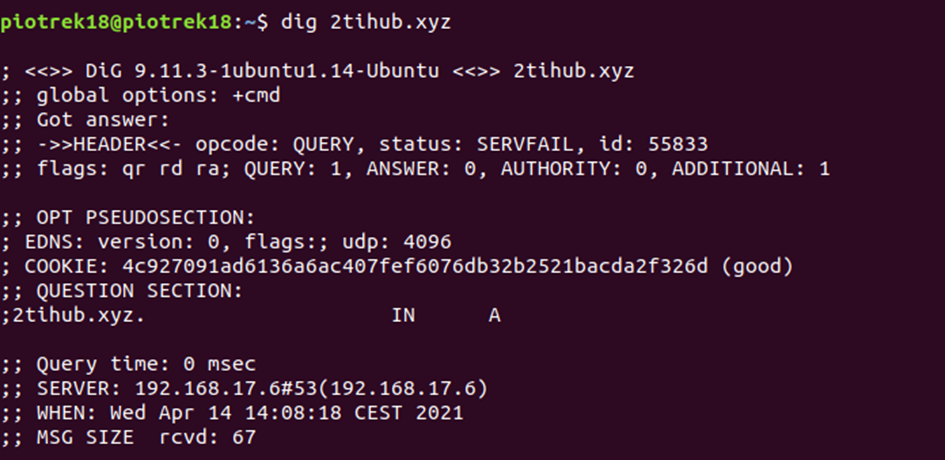